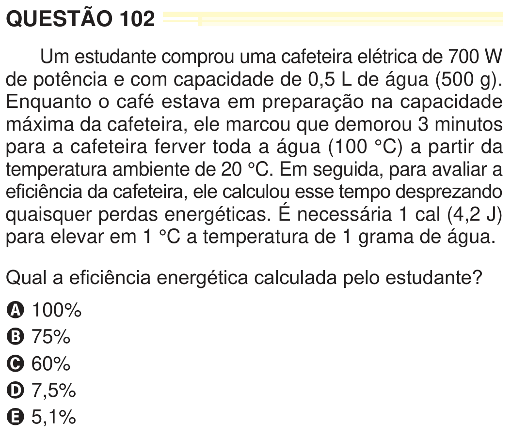

ANULADAQuestão 102 · ENEM 2024 · 2º dia · Caderno 5 Amarelo (CD5), página 5 · Ciências da Natureza

Imagem oficial integral da questão (autoria INEP), exibida sem qualquer alteração. Questão anulada oficialmente pelo INEP.
Questão anulada pelo INEP: não há gabarito oficial registrado. Nenhuma pontuação será atribuída.